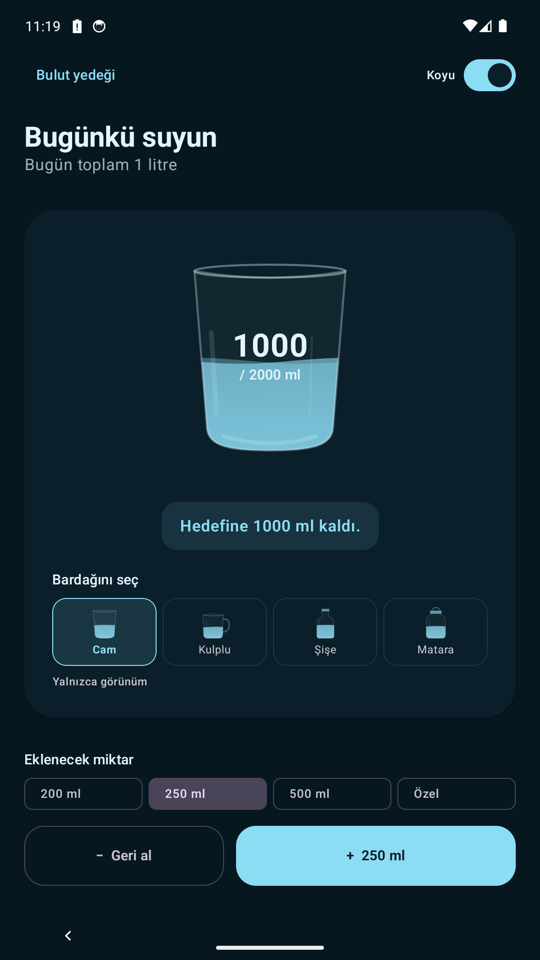
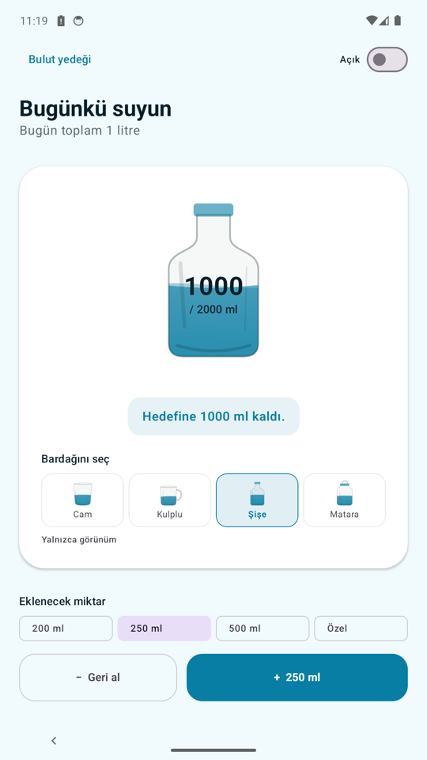
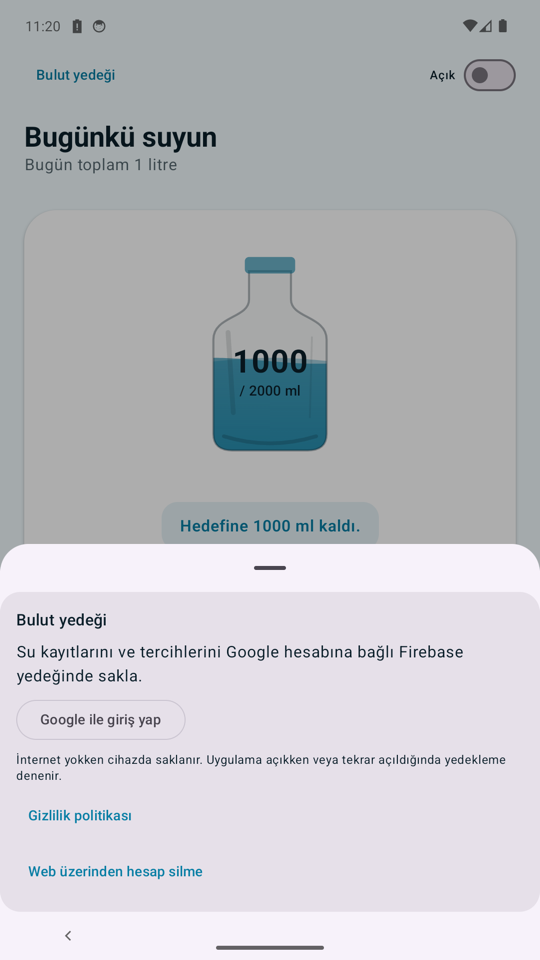

Oğuzhan Gümüş
Mobile QA Engineer · Android Developer
Download CV (PDF)Summary
QA engineer with 3+ years of experience in manual and automated testing of mobile and web applications. At Wingie Enuygun Group I tested the Enuygun iOS and Android apps, migrated the test automation framework from Java + TestNG to Gauge, and grew from QA intern to Mid QA Engineer. I work with Appium, Selenium, Gauge, Java and Python, and build test strategies around BDD and TDD. I am now building native Android apps with Kotlin and Jetpack Compose: my first app, Sutakibi, is in closed testing on Google Play. I have also built a mobile app with React Native.
Experience
Wingie Enuygun Group
Jun 2023 – Aug 2026Mid QA Engineer (Mar 2026–Aug 2026) · Junior QA Engineer (Oct 2024–Feb 2026) · QA Intern (Jun 2023–Sep 2024)
- Tested the Enuygun iOS and Android apps with both manual and automated tests.
- Migrated the test automation framework from Java + TestNG to Gauge, improving modularity and maintainability.
- Developed automation with Appium, Selenium, Gauge, Java and Python, following BDD and TDD.
- Built mobile-specific test strategies and optimized the regression and smoke test processes.
- Managed manual test cases in JIRA and TestRail; tracked and reported bugs.
Web Developer · Ordo Tekstil
Aug 2022 – Jan 2023Istanbul
- Web development and WordPress site design.
Projects
Sutakibi · Android water tracker Closed testing on Google Play
2026Kotlin · Jetpack Compose · Material 3 · Firebase
- Native Android app with a daily progress ring, cup tracking with undo, light and dark themes, and Turkish and English UI.
- MVVM with ViewModels and StateFlow over presentation, domain and data layers; local storage with SharedPreferences.
- Optional Google sign-in (Credential Manager) with Firebase Auth and Firestore cloud backup. Works offline, with no ads or analytics.
- Unit tests and Compose UI tests. Took the release through Google Play's closed-testing track: signing, testers and review.



Skills
- Test automation
- Appium, Selenium WebDriver, Gauge, TestNG, JUnit, Cucumber, REST Assured, Postman
- Methods
- BDD, TDD, Page Object Model, regression and smoke testing, Agile/Scrum
- Android
- Kotlin, Jetpack Compose, Material 3, ViewModel and StateFlow, Firebase, Compose UI tests
- Languages
- Java, Python, Kotlin, JavaScript
- Tools
- Git, GitHub, Jenkins, JIRA, Confluence, TestRail, Charles Proxy, Android Studio, Xcode
- Platforms
- Android, iOS, Web
Writing
- First app on Google Play: 12 testers, 14 days and closed testingGoogle Play'de ilk uygulama: 12 test kullanıcısı, 14 gün ve kapalı test · Medium, in Turkish
- Before you ship to the Play Store: 8 checks before saying "verified"Play Store'a sürüm göndermeden önce: "doğrulandı" demeden 8 kontrol · Medium, in Turkish
- Getting started with Appium: Android and iOS setup guide (2026)Appium ile Mobil Test Otomasyonuna Başlangıç: Android ve iOS Kurulum Rehberi · Medium, in Turkish
Education & Languages
Istanbul University · Associate Degree, Computer Programming
2022 – 2025Turkish (native) · English (professional working proficiency)